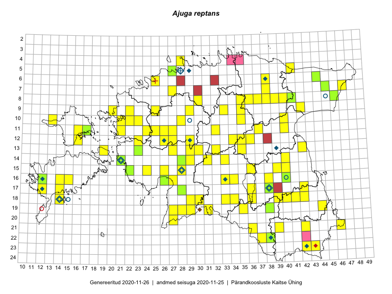

Ajuga reptans
Uuendatud: 2016-12-07
Kaardile koondatud taksonid: Ajuga reptans L.

Kaart põhineb 147 kirjel, neist vaatlusi 145 ja eksemplare 2. Taksonit on leitud 83 ruudust.
| Ruut | Vaatleja(d) | Vaatlusaeg | Kirje tüüp | Viide andmebaasikirjele |
|---|---|---|---|---|
| 16-38 | Peedu Saar, Meeli Mesipuu | 2015-05-05 | punkt | vaata PlutoFis |
| 13-30 | Peedu Saar | 2015-05-09 | ruut/ala | vaata PlutoFis |
| 13-30 | Peedu Saar | 2015-05-09 | punkt | vaata PlutoFis |
| 12-36 | Peedu Saar, Timo Luhamäe | 2015-05-11 | punkt | vaata PlutoFis |
| 19-29 | Peedu Saar, Liina Oja | 2015-05-22 | ruut/ala | vaata PlutoFis |
| 19-29 | Peedu Saar, Liina Oja | 2015-05-22 | punkt | vaata PlutoFis |
| 16-40 | Thea Kull | 2015-07-07 | punkt | vaata PlutoFis |
| 14-28 | Toomas Kukk, Indrek Tammekänd | 2015-05-09 | ruut/ala | vaata PlutoFis |
| 12-29 | Tiit Hallikma, Indrek Tammekänd, Toomas Kukk | 2015-06-09 | ruut/ala | vaata PlutoFis |
| 12-29 | Tiit Hallikma, Indrek Tammekänd, Toomas Kukk | 2015-06-09 | punkt | vaata PlutoFis |
| 13-27 | Toomas Kukk, Indrek Tammekänd | 2015-05-09 | punkt | vaata PlutoFis |
| 14-28 | Toomas Kukk, Indrek Tammekänd | 2015-05-09 | punkt | vaata PlutoFis |
| 12-34 | Toomas Kukk, Indrek Tammekänd | 2015-05-10 | ruut/ala | vaata PlutoFis |
| 12-34 | Toomas Kukk, Indrek Tammekänd | 2015-05-10 | punkt | vaata PlutoFis |
| 06-38 | Toomas Kukk, Raivo Kalle | 2015-05-13 | ruut/ala | vaata PlutoFis |
| 06-38 | Toomas Kukk, Raivo Kalle | 2015-05-13 | punkt | vaata PlutoFis |
| 10-40 | Toomas Kukk, Raivo Kalle | 2015-05-12 | ruut/ala | vaata PlutoFis |
| 11-40 | Toomas Kukk, Raivo Kalle | 2015-05-12 | ruut/ala | vaata PlutoFis |
| 12-36 | Peedu Saar, Liina Oja | 2015-06-12 | punkt | vaata PlutoFis |
| 10-40 | Toomas Kukk, Raivo Kalle | 2015-05-12 | punkt | vaata PlutoFis |
| 12-36 | Peedu Saar, Liina Oja | 2015-06-12 | ruut/ala | vaata PlutoFis |
| 07-45 | Toomas Kukk, Tiit Hallikma | 2015-06-01 | ruut/ala | vaata PlutoFis |
| 16-40 | Thea Kull | 2015-07-30 | punkt | vaata PlutoFis |
| 07-45 | Tiit Hallikma, Toomas Kukk | 2015-06-01 | punkt | vaata PlutoFis |
| 09-35 | Thea Kull, Hannes Pehlak | 2015-05-11 | punkt | vaata PlutoFis |
| 10-35 | Thea Kull, Hannes Pehlak | 2015-05-11 | punkt | vaata PlutoFis |
| 10-35 | Thea Kull, Hannes Pehlak | 2015-05-11 | ruut/ala | vaata PlutoFis |
| 09-35 | Thea Kull, Hannes Pehlak | 2015-05-15 | ruut/ala | vaata PlutoFis |
| 19-44 | Toomas Kukk | 2014-07-09 | ruut/ala | vaata PlutoFis |
| 08-46 | Thea Kull, Eerik Leibak | 2015-07-23 | ruut/ala | vaata PlutoFis |
| 19-44 | Toomas Kukk, Kersti Tambets, Janika Sammasto, Timo Luhamäe, Sten Mander | 2014-07-29 | punkt | vaata PlutoFis |
| 19-31 | Ott Luuk, Indrek Tammekänd | 2015-05-22 | ruut/ala | vaata PlutoFis |
| 15-24 | Indrek Tammekänd | 2015-05-24 | punkt | vaata PlutoFis |
| 09-33 | Jana-Maria Habicht, Ester Valdvee | 2015-05-09 | ruut/ala | vaata PlutoFis |
| 07-47 | Thea Kull, Eerik Leibak | 2015-07-21 | ruut/ala | vaata PlutoFis |
| 09-33 | Jana-Maria Habicht, Ester Valdvee | 2015-05-09 | punkt | vaata PlutoFis |
| 20-27 | Ott Luuk, Eerik Leibak, Liisa Rennel | 2015-05-20 | ruut/ala | vaata PlutoFis |
| 13-42 | Thea Kull, Meeli Mesipuu | 2015-08-14 | punkt | vaata PlutoFis |
| 20-27 | Ott Luuk, Eerik Leibak, Liisa Rennel | 2015-05-20 | punkt | vaata PlutoFis |
| 06-25 | Jana-Maria Habicht | 2015-04-25 | punkt | vaata PlutoFis |
| 17-12 | Mari Reitalu | 2015-08-25 | ruut/ala | vaata PlutoFis |
| 16-12 | Mari Reitalu | 2015-06-10 | ruut/ala | vaata PlutoFis |
| 16-12 | Mari Reitalu | 2015-06-10 | punkt | vaata PlutoFis |
| 18-39 | Kai Rünk, Ülle Jõgar, Illi Tarmu | 2015-05-19T07:00Z | ruut/ala | vaata PlutoFis |
| 19-35 | Kai Rünk, Ülle Jõgar, Illi Tarmu | 2015-05-16T07:00Z | ruut/ala | vaata PlutoFis |
| 19-27 | Indrek Tammekänd | 2015-05-16 | punkt | vaata PlutoFis |
| 17-12 | Mari Reitalu | 2015-06-26 | ruut/ala | vaata PlutoFis |
| 17-12 | Mari Reitalu | 2015-06-26 | punkt | vaata PlutoFis |
| 18-33 | Maria Abakumova, Helle Mäemets | 2015-05-25 | ruut/ala | vaata PlutoFis |
| 18-34 | Maria Abakumova, Helle Mäemets | 2015-05-21 | ruut/ala | vaata PlutoFis |
| 19-35 | Kai Rünk, Ülle Jõgar, Illi Tarmu | 2015-05-16 | punkt | vaata PlutoFis |
| 18-39 | Kai Rünk, Ülle Jõgar, Illi Tarmu | 2015-05-19 | punkt | vaata PlutoFis |
| 16-26 | Indrek Tammekänd | 2015-05-11 | ruut/ala | vaata PlutoFis |
| 08-41 | Timo Luhamäe, Liina Oja | 2015-05-14 | ruut/ala | vaata PlutoFis |
| 14-29 | Liina Oja, Ott Luuk | 2015-05-10 | ruut/ala | vaata PlutoFis |
| 14-29 | Liina Oja, Ott Luuk | 2015-05-10 | punkt | vaata PlutoFis |
| 17-42 | Kirsi Loide, Marje Loide | 2015-04-29T07:00Z | ruut/ala | vaata PlutoFis |
| 14-29 | Liina Oja, Ott Luuk | 2015-05-10 | punkt | vaata PlutoFis |
| 18-42 | Kirsi Loide, Marje Loide | 2015-04-30T07:00Z | ruut/ala | vaata PlutoFis |
| 13-29 | Liina Oja, Ott Luuk | 2015-05-09 | punkt | vaata PlutoFis |
| 06-44 | Liina Oja, Meeli Mesipuu | 2015-04-25 | ruut/ala | vaata PlutoFis |
| 13-42 | Karin Kikas, Elle Rajandu | 2015-05-19 | ruut/ala | vaata PlutoFis |
| 18-42 | Kirsi Loide, Marje Loide | 2015-07-28 | ruut/ala | vaata PlutoFis |
| 13-42 | Karin Kikas, Elle Rajandu | 2015-05-19 | punkt | vaata PlutoFis |
| 16-38 | Meeli Mesipuu, Peedu Saar | 2015-05-05 | ruut/ala | vaata PlutoFis |
| 15-40 | Elle Rajandu | 2015-04-15 | ruut/ala | vaata PlutoFis |
| 15-40 | Elle Rajandu | 2015-04-30 | punkt | vaata PlutoFis |
| 13-35 | Ott Luuk, Liina Oja | 2015-05-11 | ruut/ala | vaata PlutoFis |
| 12-35 | Ott Luuk, Liina Oja | 2015-05-11 | ruut/ala | vaata PlutoFis |
| 14-31 | Ott Luuk, Liina Oja | 2015-05-10 | ruut/ala | vaata PlutoFis |
| 18-34 | Maria Abakumova, Helle Mäemets | 2015-05-21 | punkt | vaata PlutoFis |
| 18-33 | Maria Abakumova, Helle Mäemets | 2015-05-25 | punkt | vaata PlutoFis |
| 08-37 | Karin Kikas, Elle Rajandu | 2015-06-14 | ruut/ala | vaata PlutoFis |
| 08-37 | Karin Kikas, Elle Rajandu | 2015-06-14 | punkt | vaata PlutoFis |
| 08-39 | Karin Kikas, Elle Rajandu | 2015-06-05 | punkt | vaata PlutoFis |
| 13-42 | Meeli Mesipuu, Thea Kull | 2015-08-14 | ruut/ala | vaata PlutoFis |
| 18-14 | Mari Reitalu, Triin Reitalu | 2014-07-17 | ruut/ala | vaata PlutoFis |
| 08-41 | Timo Luhamäe, Liina Oja | 2015-05-14 | punkt | vaata PlutoFis |
| 17-36 | Helle Mäemets, Mare Leis | 2015-06-25 | ruut/ala | vaata PlutoFis |
| 11-16 | Meeli Mesipuu, Timo Luhamäe | 2015-05-28 | punkt | vaata PlutoFis |
| 19-31 | Ott Luuk, Indrek Tammekänd | 2015-05-22 | punkt | vaata PlutoFis |
| 14-31 | Ott Luuk, Liina Oja | 2015-05-10 | punkt | vaata PlutoFis |
| 14-31 | Ott Luuk, Liina Oja | 2015-05-10 | punkt | vaata PlutoFis |
| 13-19 | Kadri Tali | 2015-06-03 | ruut/ala | vaata PlutoFis |
| 12-35 | Ott Luuk, Liina Oja | 2015-05-11 | punkt | vaata PlutoFis |
| 13-35 | Ott Luuk, Liina Oja | 2015-05-11 | punkt | vaata PlutoFis |
| 18-29 | Meeli Mesipuu, Thea Kull | 2015-08-19 | punkt | vaata PlutoFis |
| 16-12 | Peedu Saar, Toomas Kukk, Mari Reitalu, Thea Kull | 2014-06-28 | ruut/ala | vaata PlutoFis |
| 16-12 | Peedu Saar, Toomas Kukk, Mari Reitalu, Thea Kull | 2014-06-28 | punkt | vaata PlutoFis |
| 06-44 | Meeli Mesipuu, Liina Oja | 2015-04-25 | punkt | vaata PlutoFis |
| 11-25 | Hanna-Eliisa Luts, Tõnu Ploompuu | 2015-07-28 | ruut/ala | vaata PlutoFis |
| 09-42 | Tõnu Ploompuu | 2015-08-26 | ruut/ala | vaata PlutoFis |
| 23-42 | Meeli Mesipuu, Thea Kull | 2016-04-26 | punkt | vaata PlutoFis |
| 21-36 | Ott Luuk, Tiit Hallikma | 2016-04-27 | ruut/ala | vaata PlutoFis |
| 15-28 | Ott Luuk, Tiit Hallikma | 2016-04-28 | ruut/ala | vaata PlutoFis |
| 11-26 | Hanna-Eliisa Luts, Tõnu Ploompuu | 2015-07-28 | ruut/ala | vaata PlutoFis |
| 15-36 | Thea Kull, Ott Luuk | 2016-05-05 | punkt | vaata PlutoFis |
| 10-13 | Peedu Saar, Toomas Kukk | 2016-05-07 | punkt | vaata PlutoFis |
| 08-30 | Thea Kull, Meeli Mesipuu | 2016-05-13 | punkt | vaata PlutoFis |
| 12-26 | Tõnu Ploompuu | 2015-06-23 | ruut/ala | vaata PlutoFis |
| 09-25 | Ott Luuk, Tiit Hallikma | 2016-05-13 | ruut/ala | vaata PlutoFis |
| 12-27 | Ott Luuk, Tiit Hallikma | 2016-05-14 | ruut/ala | vaata PlutoFis |
| 12-23 | Ott Luuk, Tiit Hallikma | 2016-05-14 | ruut/ala | vaata PlutoFis |
| 12-23 | Ott Luuk | 2016-05-14 | punkt | vaata PlutoFis |
| 12-26 | Andrus Jair, Tõnu Ploompuu | 2015-05-17 | ruut/ala | vaata PlutoFis |
| 09-29 | Ott Luuk, Thea Kull | 2016-05-30 | ruut/ala | vaata PlutoFis |
| 21-36 | Tiit Hallikma, Ott Luuk | 2016-04-27 | punkt | vaata PlutoFis |
| 15-28 | Tiit Hallikma, Ott Luuk | 2016-04-28 | punkt | vaata PlutoFis |
| 09-25 | Tiit Hallikma, Ott Luuk | 2016-05-13 | punkt | vaata PlutoFis |
| 09-25 | Tiit Hallikma, Ott Luuk | 2016-05-13 | punkt | vaata PlutoFis |
| 12-27 | Tiit Hallikma, Ott Luuk | 2016-05-14 | punkt | vaata PlutoFis |
| 12-27 | Tiit Hallikma, Ott Luuk | 2016-05-14 | punkt | vaata PlutoFis |
| 09-22 | Tõnu Ploompuu | 2015-07-14 | ruut/ala | vaata PlutoFis |
| 09-29 | Thea Kull, Ott Luuk | 2016-05-30 | punkt | vaata PlutoFis |
| 10-22 | Tõnu Ploompuu | 2015-05-20 | ruut/ala | vaata PlutoFis |
| 11-27 | Andrus Jair, Tõnu Ploompuu | 2015-05-17 | ruut/ala | vaata PlutoFis |
| 21-42 | Vivika Väli, Ülo Väli | 2015-07-26 | punkt | vaata PlutoFis |
| 21-39 | Rein Kalamees, Eerik Leibak | 2016-06-17 | punkt | vaata PlutoFis |
| 21-39 | Rein Kalamees, Eerik Leibak | 2016-06-17 | ruut/ala | vaata PlutoFis |
| 18-40 | Tiit Hallikma, Toomas Kukk | 2016-06-13 | punkt | vaata PlutoFis |
| 09-29 | Toomas Kukk, Sander Laherand | 2016-07-06 | ruut/ala | vaata PlutoFis |
| 09-29 | Sander Laherand, Toomas Kukk | 2016-07-06 | punkt | vaata PlutoFis |
| 07-38 | Liina Oja, Eerik Leibak | 2016-07-28 | ruut/ala | vaata PlutoFis |
| 12-36 | Toomas Kukk, Raivo Kalle | 2016-07-22 | punkt | vaata PlutoFis |
| 11-32 | Aat Sarv, Jaak-Albert Metsoja | 2016-07-21 | punkt | vaata PlutoFis |
| 15-26 | Maret Gerz, Aat Sarv | 2016-07-04 | punkt | vaata PlutoFis |
| 13-32 | Susanna Vain, Thea Kull, Raivo Kalle | 2016-07-21 | punkt | vaata PlutoFis |
| 15-26 | Aat Sarv, Maret Gerz | 2016-07-04 | ruut/ala | vaata PlutoFis |
| 07-38 | Liina Oja, Eerik Leibak | 2016-07-28 | punkt | vaata PlutoFis |
| 08-35 | Toomas Kukk, Sander Laherand, Nele Jõessar | 2016-07-27 | punkt | vaata PlutoFis |
| 08-36 | Mari Reitalu | 2016-06-20 | ruut/ala | vaata PlutoFis |
| 16-27 | Tiit Hallikma, Tõnu Ploompuu | 2016-06-20 | ruut/ala | vaata PlutoFis |
| 06-38 | Tõnu Ploompuu | 2016-07-17 | ruut/ala | vaata PlutoFis |
| 13-30 | Tõnu Ploompuu, Hannes Pehlak, Marko Veinbergs | 2016-07-21 | ruut/ala | vaata PlutoFis |
| 05-41 | Tiit Hallikma, Tõnu Ploompuu | 2016-07-26 | punkt | vaata PlutoFis |
| 18-36 | Peedu Saar, Mari Metsoja | 2016-07-20 | punkt | vaata PlutoFis |
| 05-41 | Tiit Hallikma, Tõnu Ploompuu | 2016-07-26 | ruut/ala | vaata PlutoFis |
| 10-35 | Tiit Hallikma, Toomas Kukk | 2016-07-25 | punkt | vaata PlutoFis |
| 19-31 | Meeli Mesipuu, Mari Metsoja | 2016-07-19 | ruut/ala | vaata PlutoFis |
| 13-35 | Ott Luuk, Hannes Pehlak | 2016-07-22 | ruut/ala | vaata PlutoFis |
| 14-33 | Ott Luuk, Indrek Tammekänd | 2016-07-21 | ruut/ala | vaata PlutoFis |
| 09-20 | Kadi-Liis Kesler | 2015-06-25 | ruut/ala | vaata PlutoFis |
| 19-28 | Ott Luuk, Peedu Saar | 2016-06-09 | punkt | vaata PlutoFis |
| 18-41 | Ott Luuk, Sander Laherand, Susanna Vain | 2016-06-13 | ruut/ala | vaata PlutoFis |
| 19-31 | Mari Metsoja, Meeli Mesipuu | 2016-07-19 | punkt | vaata PlutoFis |
| 06-44 | Peedu Saar, Liina Oja | 2015-07-21 | eksemplar | vaata PlutoFis |
| 11-17 | Peedu Saar, Toomas Kukk | 2015-05-28 | eksemplar | vaata PlutoFis |